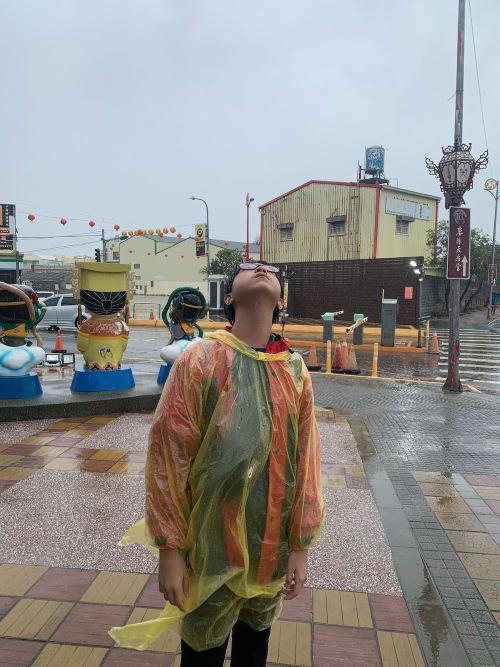

Untuk IPS kami diminta untuk mewawancarai beberapa penduduk di Taiwan di tempat yang kami kunjungi yang bukan merupakan bangunan. |
|
Saya memilih untuk mewawancarai orang-orang di tempat yang bernama Lukang Oldstreet.
|
|

|
|
Ini adalah foto saya setelah kami pergi ke Lukang Oldstreet.
|
|
Kami bertanya kepada orang-orang yang berada di Kuil
|
Ini adalah pertanyaannya. |
- Kondisi sebagian besar bangunan.
- Cara masyarakat merawat masa lalu.
- Tata kota area destinasi.
- Interaksi antar-generasi.
- Kepercayaan/Keyakinan masyarakat.
|
Ini adalah hasil wawancaranya.
- Gedung tidak berubah banyak seperti contohnya kuil. Masih banyak penduduk yang tinggal disana.
- Mereka menjaga bangunan di Lukang Oldstreet dengan preservasi.
- Banyak bangunan toko masih ada, hanya tidak seramai dulu.
- Generasi lansia masih banyak mendatangi tempat ini, namun generasi mudanya jarang berkunjung.
- Mereka membangun kuil dewa air karena nelayan di kota kecil itu percaya bahwa apabila dewa air bahagia maka ikan akan melimpah di daerah tersebut.
|